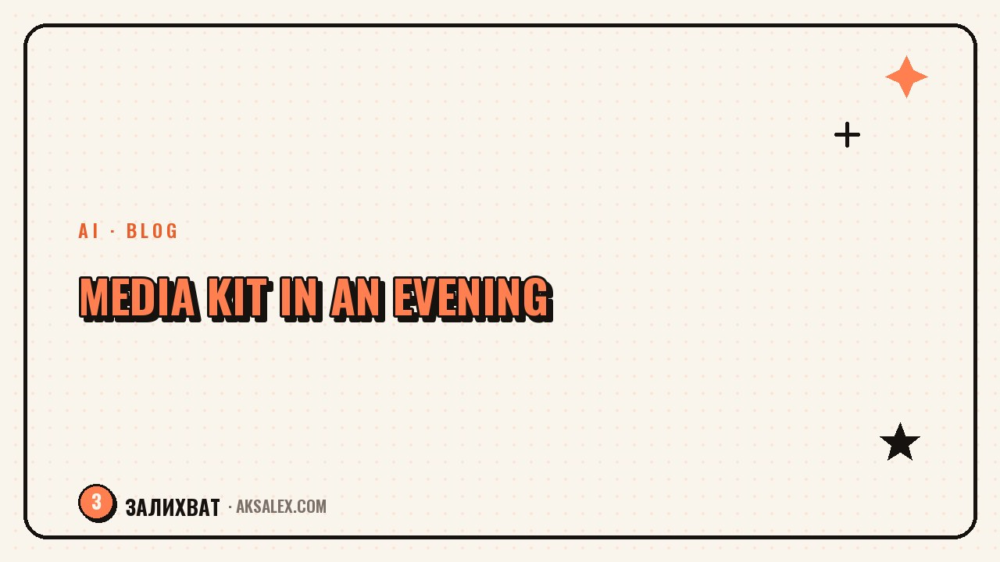

A Blogger's Media Kit with AI: How to Build One

Why a blogger needs a media kit and what brands look for in it
A brand manager gets dozens of pitches from bloggers a day. They don't have time to scroll your profile and calculate engagement by hand. A media kit saves them that time and shows you take collaboration seriously, rather than writing 'wanna do an ad?' in the DMs.
A brand usually looks at three things: reach and engagement, an audience profile (gender, age, geography), and examples of past collaborations with results. If that data isn't in the media kit, the manager will request it separately - and some bloggers lose the deal at this stage over a slow reply.
What must be in a media kit
- Who you are and what the blog is about - one or two sentences, no long intro
- Audience: gender, age, top 3 cities or countries
- Post and story reach over the last month
- Engagement (likes, comments, saves) as a percentage
- The ad formats you do and their prices
- Case studies of past collaborations with specific numbers
You don't have to spell out each point in a paragraph. A brand cares about numbers and context, not the story of your blog from its first post.
How AI speeds up building a media kit
Pulling stats from the social network's app and formatting them into something readable is the tedious part of the job. A text AI helps write the blocks: positioning, audience description, case studies - you give it the raw numbers and facts, and it assembles coherent text from them.
For layout, builders with AI templates work well: they suggest a media-kit structure themselves and let you drop in numbers without designing from scratch. For the cover and visual style, you can generate illustrations with AI if you don't want to book a photoshoot.
A media kit is a working sales tool, not a creative project. The faster a brand finds the numbers in it, the higher the chance of a deal.
The plan: build a media kit in one evening
| Stage | What to do | Time |
|---|---|---|
| Gathering numbers | Export reach and audience stats from the social network's app | 20 minutes |
| Text | Ask the AI to assemble your positioning and case studies from your data | 30 minutes |
| Layout | Drop the text and numbers into a builder template | 40 minutes |
| Review | Read it aloud and cut the corporate stiffness | 15 minutes |
A finished media kit lasts 3-6 months if there hasn't been a sharp jump in audience. After a major news moment or a blog rebrand, refresh the numbers again.
Common media kit mistakes
A document that's too long
No one reads ten slides of blog history. A brand manager spends less than a minute on a media kit - keep only what affects the decision.
Rounded numbers with no time period
'About 10,000 reach' sounds unconvincing. Give exact numbers for a specific period - it looks more honest and more professional.
No ad pricing
If the price isn't listed, some brands won't bother writing to ask - they'll move on to the next blog on the list, where the price is visible right away.
Frequently Asked Questions
Do I need a media kit if my audience is small?
Yes, a media kit is worth having at any audience size - brands increasingly choose bloggers with small audiences for engagement, not just reach, and you can't show that without numbers.
How often should I update the media kit?
Every 3-6 months, or right after a noticeable audience jump and new successful collaborations.
Can I leave out exact audience numbers?
You can, but it lowers trust. Brands verify numbers through the platform's stats, so rounding them beyond recognition looks suspicious.
What format should a media kit be in?
Most often it's a 1-3 page PDF or a link to an online page. The format depends on which is easier for the brand to forward within their team.
Can AI write the whole media kit without my data?
No, without real numbers and facts the text comes out generic and won't reflect your blog. AI formats and structures what you give it, it doesn't invent numbers for you.
Enjoyed this one? Here's what to read next. We break down the criteria for choosing an AI writing tool for your blog instead of grabbing the first one you find.
Read the article →not by hand